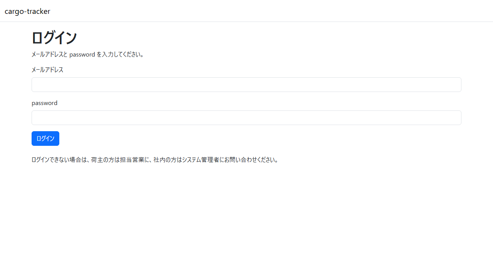
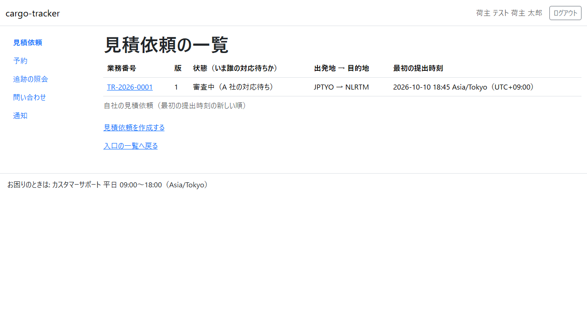
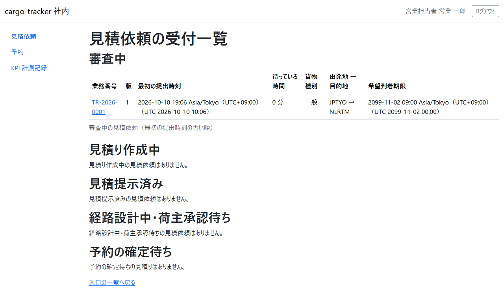
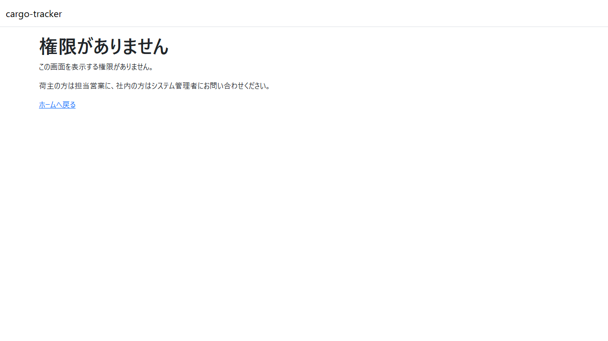
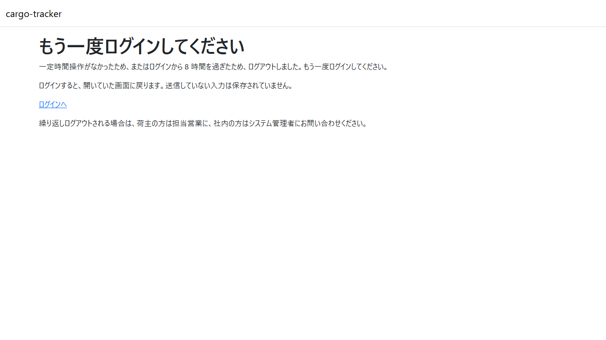

2 章 ログインと共通の画面
cargo-tracker にログインする手順と、どの役割でも共通の画面（画面の構成、権限がない画面、もう一度ログインする画面）を説明します。本章は WF-1 のすべての工程の前提です。
画面の開き方: ブラウザで cargo-tracker の URL を開きます。ログインしていなければ、ログインの画面が開きます。
| 画面 | 役割 | 節 |
|---|---|---|
| ログイン | メールアドレスと password でログインする | 2.1 |
| 画面の構成 | ヘッダー・ナビゲーション・窓口の案内 | 2.2 |
| 権限がありません | 役割にない画面を開いたときに示される | 2.3 |
| もう一度ログインしてください | 一定時間が過ぎてログアウトしたときに示される | 2.4 |
2.1 ログイン
この画面でできること
- メールアドレスと password で cargo-tracker にログインします。ログインすると、役割ごとの最初の画面（ホーム）が開きます
画面の開き方
- cargo-tracker の URL を開きます（URL:
/login）
画面の説明

| # | 項目 | 説明 |
|---|---|---|
| ① | メールアドレス | 利用者として登録されたメールアドレス |
| ② | password | 利用者の password |
| ③ | 「ログイン」 | 入力した内容でログインします |
操作手順
- 「メールアドレス」と「password」を入力します
- 「ログイン」をクリックします
- 役割ごとのホームが開きます。荷主担当者は見積依頼の一覧、営業担当者は見積依頼の受付一覧、経路設計者は経路設計案件一覧、追跡管理者は追跡一覧が開きます
注意・補足
- メールアドレスか password が違うと、「メールアドレスまたは password が正しくありません。」と示されます。どちらが違うかは示しません
- ログインできない場合は、荷主の方は担当営業に、社内の方はシステム管理者にお問い合わせください
- 画面の右上の「ログアウト」をクリックするとログアウトし、ログインの画面に「ログアウトしました。」と示されます
2.2 画面の構成
この画面でできること
- ログインした後の画面は、荷主の画面と社内の画面でほぼ同じ構成です。ナビゲーションから、役割で使える画面を開きます
画面の開き方
- ログインした後のすべての画面
画面の説明

| # | 項目 | 説明 |
|---|---|---|
| ① | ヘッダー | 左に「cargo-tracker」、右にログインしている利用者（会社名と名前）と「ログアウト」 |
| ② | ナビゲーション | 役割で使える画面の一覧。いま開いている画面の項目が強調されます |
| ③ | メインの領域 | 画面ごとの内容 |
| ④ | 窓口の案内 | 荷主の画面の下の「お困りのときは: カスタマーサポート 平日 09:00〜18:00（Asia/Tokyo）」 |
荷主担当者のナビゲーションの項目は次のとおりです。
| 項目 | 開く画面 | 章 |
|---|---|---|
| 見積依頼 | 見積依頼の一覧 | 3 章 |
| 予約 | 予約一覧 | 5.1 |
| 追跡の照会 | 追跡の照会 | 5.2 |
| 問い合わせ | （準備中） | — |
| 通知 | （準備中） | — |
社内の画面は、ヘッダーが「cargo-tracker 社内」になり、右に役割と名前が示されます。窓口の案内はありません。

社内の役割ごとのナビゲーションの項目は次のとおりです。
| 役割 | 項目 | 章 |
|---|---|---|
| 営業担当者 | 見積依頼・予約・KPI 計測記録 | 6 章・7 章・10 章 |
| 経路設計者 | 経路設計 | 8 章 |
| 追跡管理者 | 追跡 | 9 章 |
操作手順
- ナビゲーションの項目をクリックすると、その画面が開きます
- 画面の幅が狭いときは、ナビゲーションがメニューのボタンにまとまります。ボタンを押すと項目が開きます
注意・補足
- 「問い合わせ」「通知」は、まだ作っていない画面です。開くと「この画面は準備中です」と示されます。使えるようになるまでは、担当営業にご連絡ください
2.3 権限がありません
この画面でできること
- 役割にない画面（荷主担当者が社内の画面を開いたときなど）を開くと示されます。操作はできません
画面の開き方
- 役割にない画面の URL を直接開いたときに示されます
画面の説明

| # | 項目 | 説明 |
|---|---|---|
| ① | メッセージ | 「この画面を表示する権限がありません。」と、問い合わせ先 |
| ② | 「ホームへ戻る」 | 役割ごとのホームへ戻ります |
操作手順
- 「ホームへ戻る」をクリックします
注意・補足
- 自分の役割で使う画面なのにこの画面が示される場合は、荷主の方は担当営業に、社内の方はシステム管理者にお問い合わせください
2.4 もう一度ログインしてください
この画面でできること
- 一定時間操作がなかったとき、またはログインから 8 時間を過ぎたときに、ログアウトして示されます
画面の開き方
- ログアウトした後に画面を操作すると示されます（URL:
/session-expired）
画面の説明

| # | 項目 | 説明 |
|---|---|---|
| ① | メッセージ | ログアウトした理由と、ログインすると開いていた画面に戻ること |
| ② | 「ログインへ」 | ログインの画面を開きます |
操作手順
- 「ログインへ」をクリックします
- 2.1 ログイン の手順でログインします。開いていた画面に戻ります
注意・補足
- 送信していない入力は保存されていません。ログインし直した後に、もう一度入力してください
- 操作がないままの時間は 30 分まで、ログインしてからの時間は 8 時間までです
- 繰り返しログアウトされる場合は、荷主の方は担当営業に、社内の方はシステム管理者にお問い合わせください